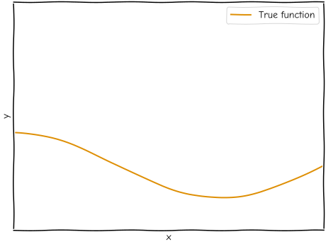
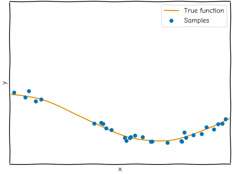
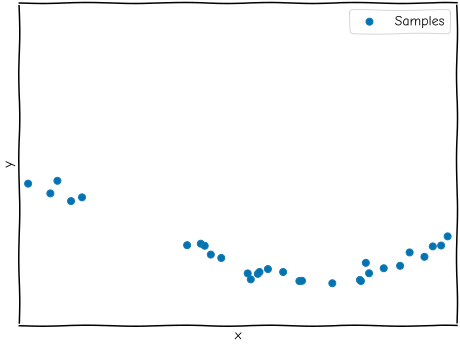
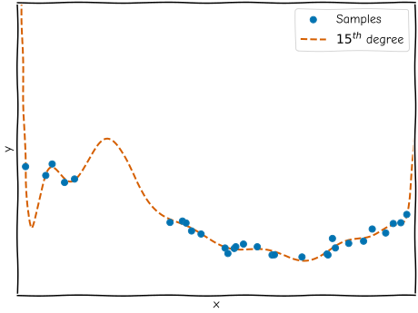
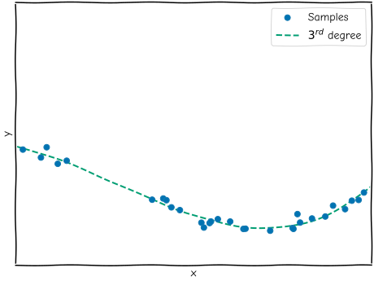
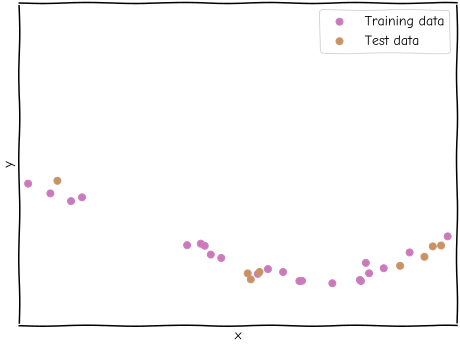
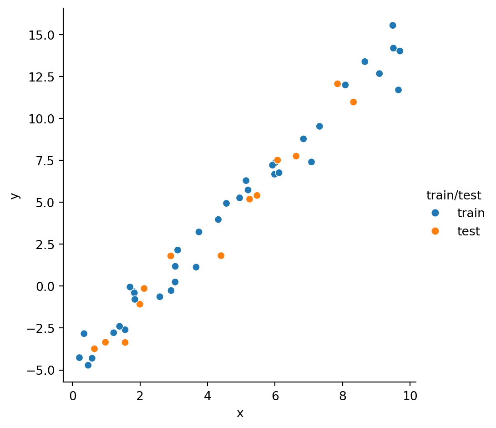
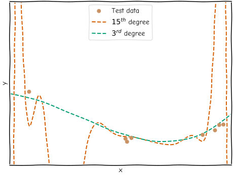

from sklearn.model_selection import train_test_split
train_X, test_X, train_y, test_y = train_test_split(X, y, random_state=42)Testing your model
So far we have been fitting our model to the data and assuming that it is doing a good job. We have not had any method for analysing the quality of the fit. In our example so far we first looked at the fit with our eyes and judged it sufficient. We then compared the output parameters with our ground-truth and judged it to be “close enough”.
To truly judge how good the model is, we need to compare it with some data and see how well it aligns (i.e. how well it would be able to predict it).
Naïvely we might think to compare our model against the same data we used to fit it. However, this is a dangerous thing to do as it encourages you to tweak your model to best fit the data that you have in hand rather than trying to make a model which can predict things about the process which generated your data. Making your model fit your local subset well, at the expense of the global superset is known as overfitting.
For example, imagine we have a true physical model:

If we want to understand the underlying model, we can make measurements of it:

However, we cannot see the underlying model directly so all that we see is:

We can fit this model with perhaps varying degrees of polynomial. Mathematically, if we increase the degree of polynomial far enough we can fit any function. For example, fitting the data with a 15th-order polynomial creates a model which goes through most of the data points but clearly represent the underlying model badly:

Here we can see that the model is not doing a good job of representing the underlying function (because we saw it above) but in the real world you do not usually have the underlying model available. In those cases overfitting is harder to see as it just manifests as a “well-performing” model. Seen in isolation, this model looks like it is performing quite well, whereas a 3rd-order polynomial looks slightly worse (as fewer of the bumps are accounted for):

The simplest solution to overfitting is to fit your model with one subset of data and then assess its quality with another subset. If those two subsets are independent then any specific features in the former which your model might try to overfit to will not be present in the latter and so it will be judged poorly.

Bringing up our data from the last chapter again:
import pandas as pd
data = pd.read_csv("https://bristol-training.github.io/applied-data-analysis-in-python/data/linear.csv")
X = data[["x"]]
y = data["y"]scikit-learn provides a built-in function, train_test_split, to split your data into a subset of data to fit with and a subset of data to test against:
train_test_split will split your data randomly and so to get a reproducible “random” split we set the random_state argument.
To see that train and test are taken from the same distribution let’s plot them:
import seaborn as sns
# Label the original DataFrame with the test/train split
# This is just used for plotting purposes
data.loc[train_X.index, "train/test"] = "train"
data.loc[test_X.index, "train/test"] = "test"
sns.relplot(data=data, x="x", y="y", hue="train/test")
Now that we have train and test we should only ever pass train to the fit function:
from sklearn.linear_model import LinearRegression
model = LinearRegression(fit_intercept=True)
model.fit(train_X, train_y)LinearRegression()In a Jupyter environment, please rerun this cell to show the HTML representation or trust the notebook.
On GitHub, the HTML representation is unable to render, please try loading this page with nbviewer.org.
LinearRegression()
To find out how good the fit was, we can call the score method on the model. It is important here that we pass in our test data set as we expect that to provide an independent validation of the model.
model.score(test_X, test_y)0.9676069631786152A score of \(1.0\) is a perfect match and anything less than that is less-well performing. A score of \(0.97\) suggests we have a very good model.
Going back to our example from the start, we can see that when we compare our 3rd- and 15th-order polynomials against the test data, the 3rd-order score will be much better:
